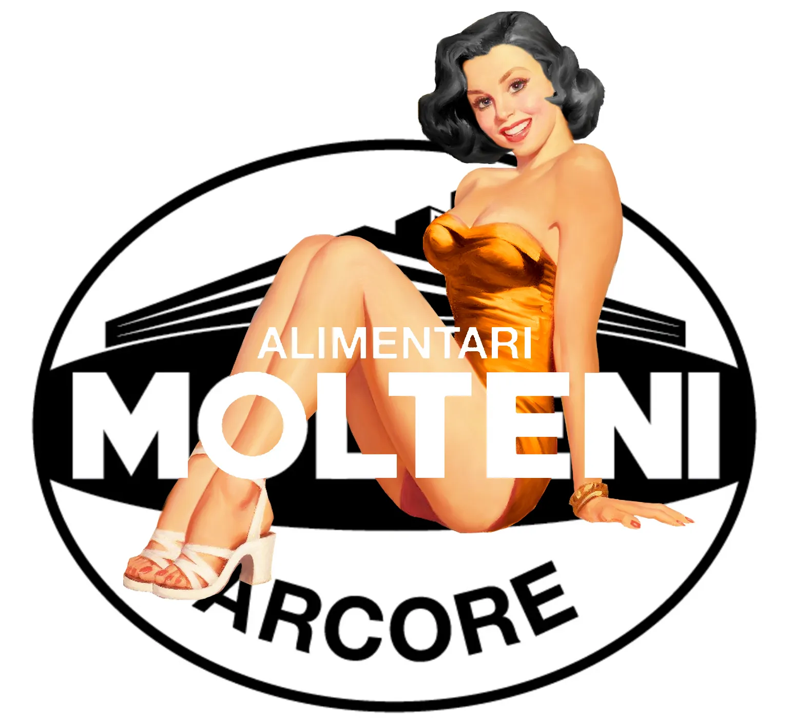

Om Squadra Molteni

Gruppo Sportivo Squadra Molteni har passion for retrocykling og cykelsportens historie. Vi er en hyldest til det ikoniske Molteni Arcore / Molteni Campagnolo fra 1958-1976.Vi deltager i en række motionscykelløb, banecykelløb, cykelcrossløb og retrocykelløb, både indlands og udlands gennem hele cykelsæsonen.
Vi bygger og istandsætter vores gamle stålcykler – og vi mener, at der både skal trænes og køres cykelløb på dem.
Holdet blev dannet i maj, 2014. Holdet består af omkring 15-20 ryttere – og en teambus, sportsdirektørbil, en brygmester, to slags mørke Molteni-øl, en holdlæge og en torta mamma .
I 2016 blev Squadra Molteni 3 gange danmarksmestre: Retro Holdtidskørsel, Linjeløb Retro-DM Herre, Linjeløb Retro-DM Herre Master.
3 ryttere fra Squadra Molteni satte i 2017 verdensrekord ved at cykle 100 gange op af Kiddesvej i Vejle – og i 2019 satte 7 ryttere fra Squadra Molteni time-verdensrekord på Thorvald Ellegaard Arena i Odense.